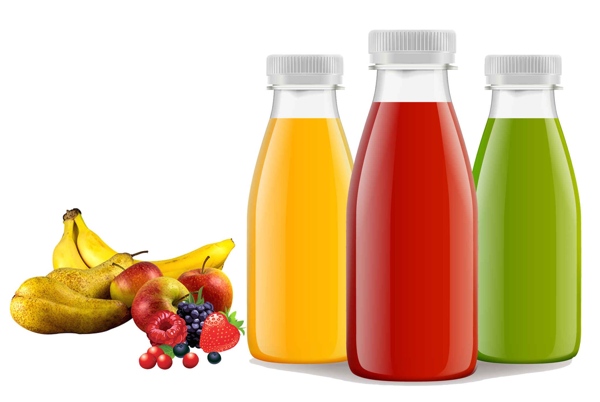

Inicio
BEBER. PURIFICAR. VIVIR.
PURIFICACIÓN DE ZUMO EN 4 PASOS
Comienza tu purificación
100% FRESCO Y NATURAL.
Lorem itsun bgdyt shbdjdiweb Lorem itsun bgdyt shbdjdiweb Lorem itsun bgdyt shbdjdiweb
Comienza tu purificación
